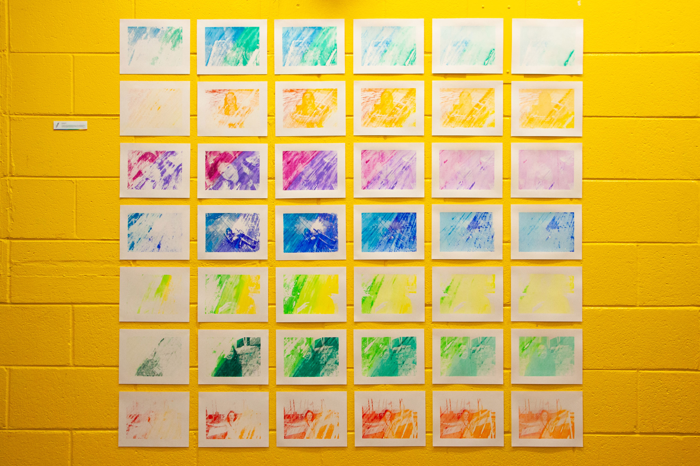
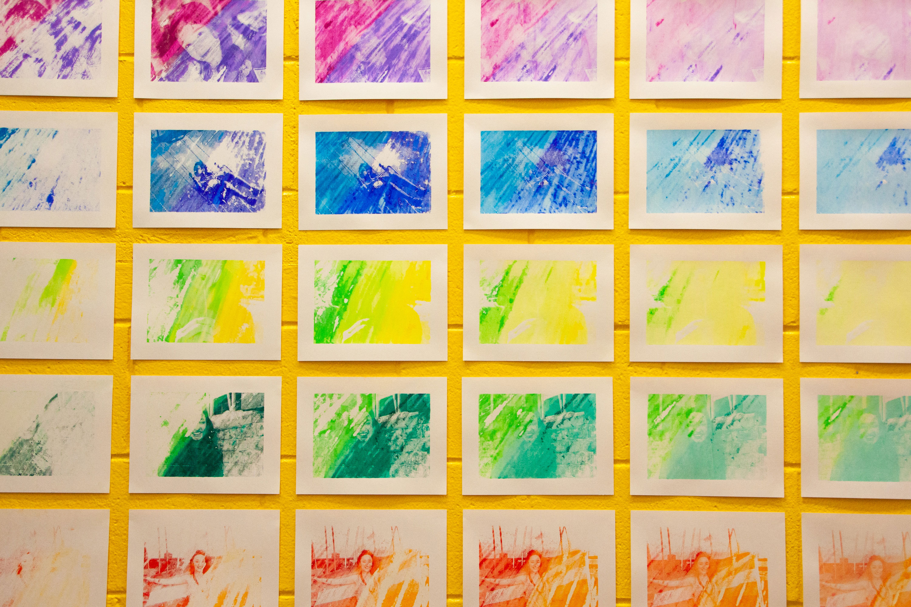
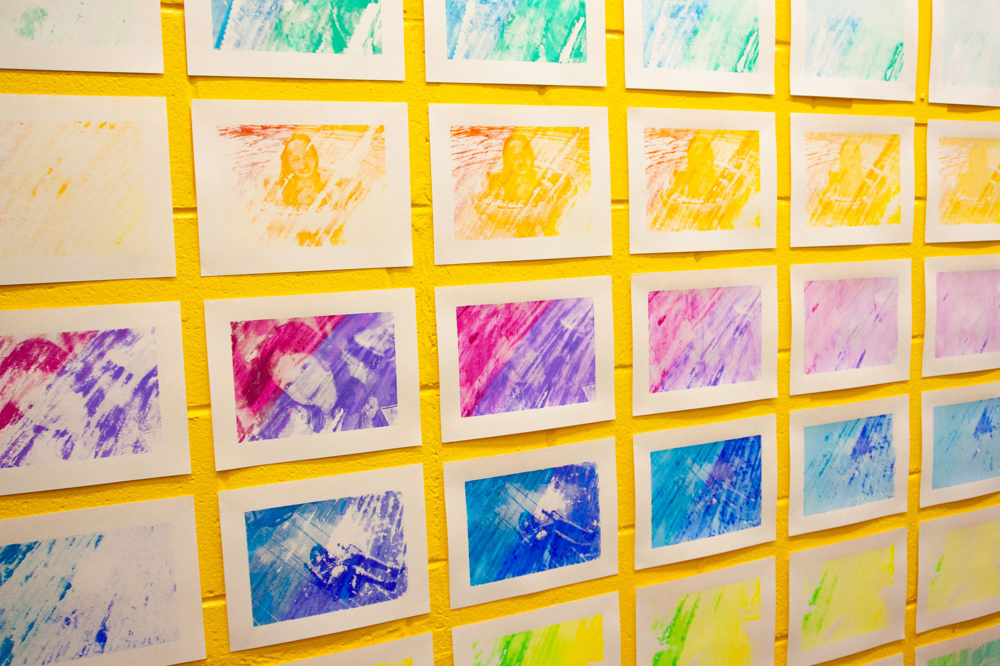
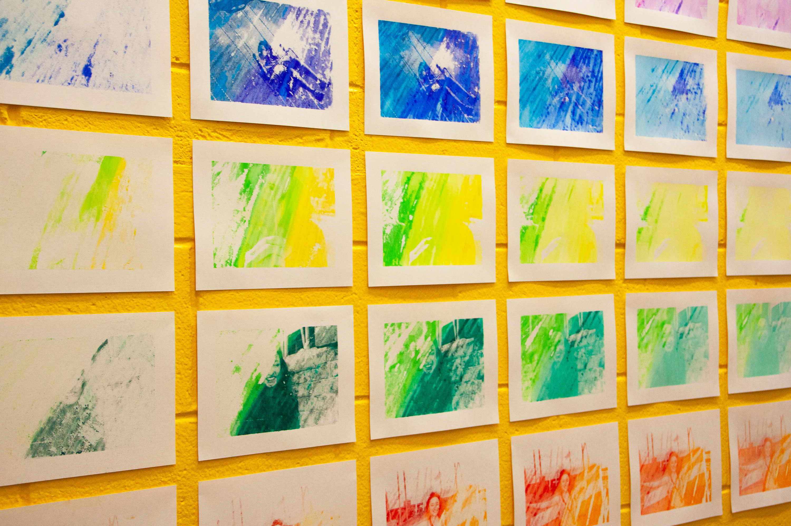

installation
prints
about
research




❮
❯
![A close-up of the label beside the prints, which reads, 'it's not a phase, Elora Romo' with the short description, 'it’s not a phase is a collection of mono-screen prints reflecting on my life, depicting photographs of myself from childhood to now. Each photograph is hand printed with water-based pastels in colors that signify that memory or time in my life to me.' Beside the text is a black and white pencil glyph. The label is printd on white paper, and has a rainbow gradient bar spanning the bottom of the label.](install/install5.jpg)